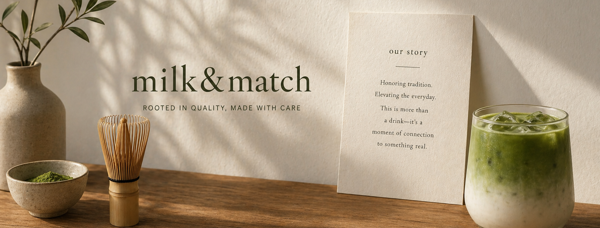

OUR STORY
Milk&Match began with a quiet realization: something meaningful was being lost. As matcha and tea beverages surged in popularity around the world, the founders found themselves both excited and disappointed. What was once a deeply rooted, intentional craft was quickly becoming diluted, reduced to syrups, powders, and large-batch shortcuts designed for speed rather than substance. Drinks looked beautiful, but often lacked the depth, care, and cultural respect that defined them for centuries.
The founders of Milk&Match believed there was more to these beverages than convenience and aesthetics. Matcha, tea, and coffee each carry rich histories—rituals shaped by time, culture, and craftsmanship. From the careful stone-grinding of matcha leaves in Japan to the slow steeping of whole-leaf teas, these traditions were built on patience, precision, and purpose. It became clear that if these drinks were to evolve in the modern world, they deserved to do so without losing their essence.

Driven by that belief, Milk&Match was created as a response to the industry’s shift toward shortcuts. The goal was never just to serve drinks, but to restore intention to every step of the process. That meant sourcing high-quality matcha directly from trusted regions in Japan, selecting premium whole-leaf teas, and preparing each beverage in small batches with care. No artificial syrups to mask flavor, no compromises for the sake of speed, just honest ingredients, thoughtfully combined.
At its core, Milk&Match exists to give people the full experience of what these drinks can be. Not just something to consume, but something to appreciate. Every cup is designed to highlight the natural complexity of its ingredients—the earthiness of matcha, the brightness of tea, the richness of coffee—while still embracing modern creativity through subtle flavors and pairings. It’s a balance between honoring tradition and inviting new ways to enjoy it.
Beyond the drinks themselves, the brand is built on a deeper philosophy: respect. Respect for the cultures that shaped these practices, for the ingredients and the people who cultivate them, and for the customers who choose to engage with them. Milk&Match values transparency, quality, and intention above all else. Each decision, from sourcing to preparation to presentation, reflects a commitment to integrity over convenience.
Milk&Match is not just a café, it is a space for connection. A place where tradition meets modern life, where people can slow down, share a moment, and rediscover the beauty in something as simple as a well-crafted drink. Because at the end of it all, it’s never just about what’s in the cup—it’s about the story behind it, and the experience it creates.